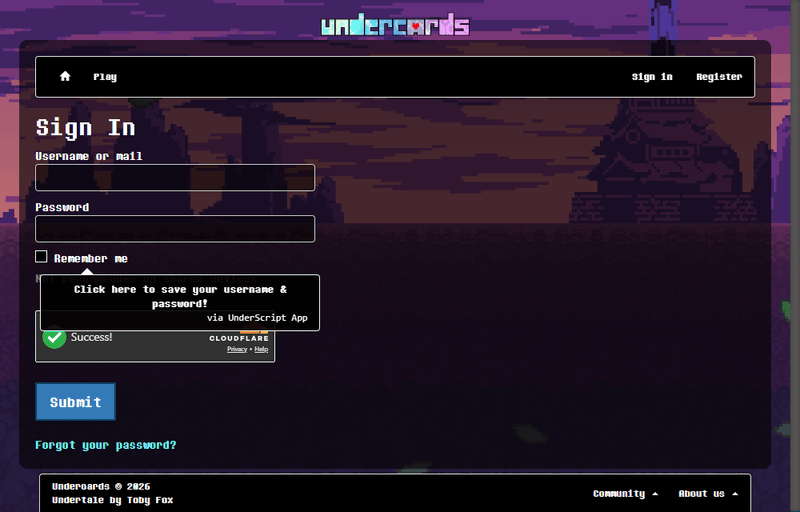
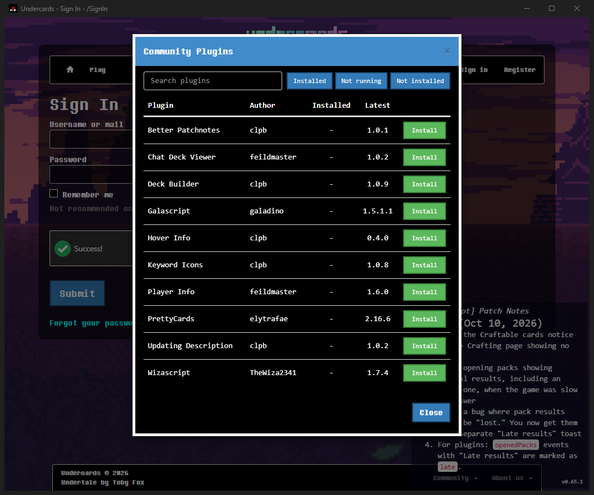
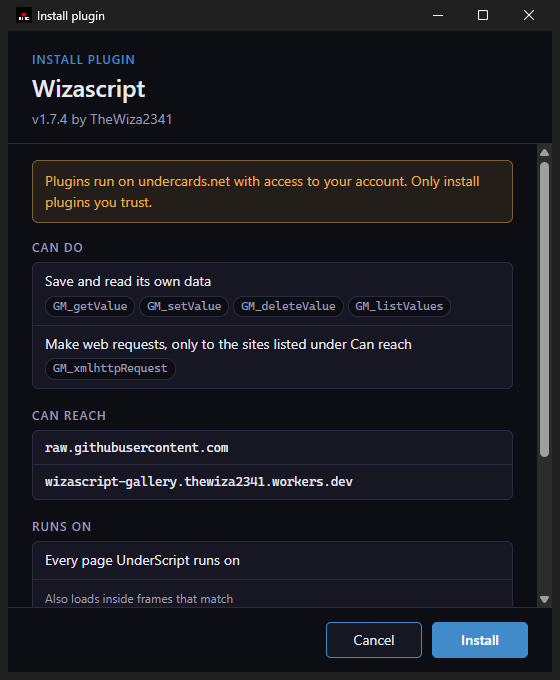
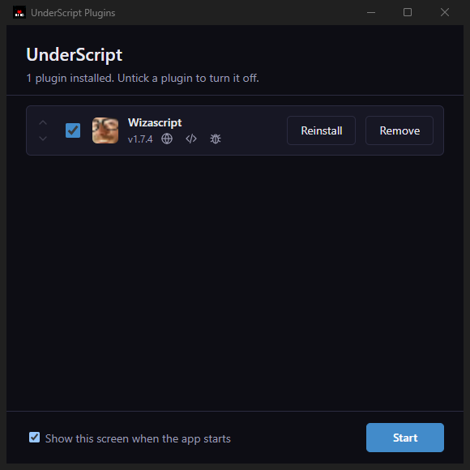

Sign in once
The first time, sign in as usual and tick "Remember me". The app keeps your password in your system's own credential store, and the next time the sign in page loads with your username and password already filled in.

Updates
The app downloads its own updates and installs them when you quit, and it brings in the latest UnderScript each time it starts. Plugins are different: nothing is updated until you update from "Pending Updates".
Plugins with ease
Open the UnderScript menu with Esc, choose "Community Plugins", and click Install. Before anything is installed, the app shows what the plugin can do, which sites it can reach, and where it runs.



Download
The builds are not code-signed, so Windows SmartScreen or macOS Gatekeeper may warn you the first time you open the app. You can approve it from the warning or from your system's security settings.